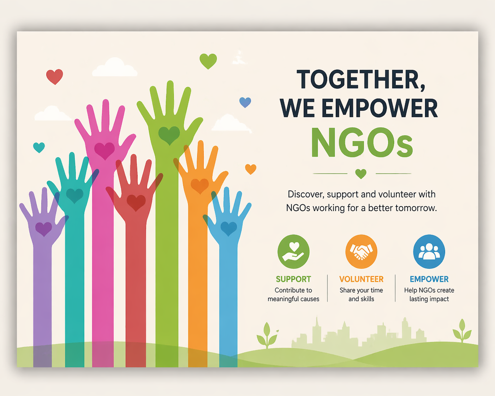

Established in 2024, NGO Connect is a digital platform based in Kolkata that brings together NGOs, donors, and volunteers on a single, transparent interface. The platform enables users to discover verified NGOs, contribute through donations, and participate in meaningful volunteer opportunities across sectors such as education, healthcare, and social welfare.
NGO Connect aims to simplify the process of giving and engagement by providing clear insights into NGO needs and progress. By fostering collaboration between individuals and organizations, it works toward creating a more connected and impactful community-driven support system.